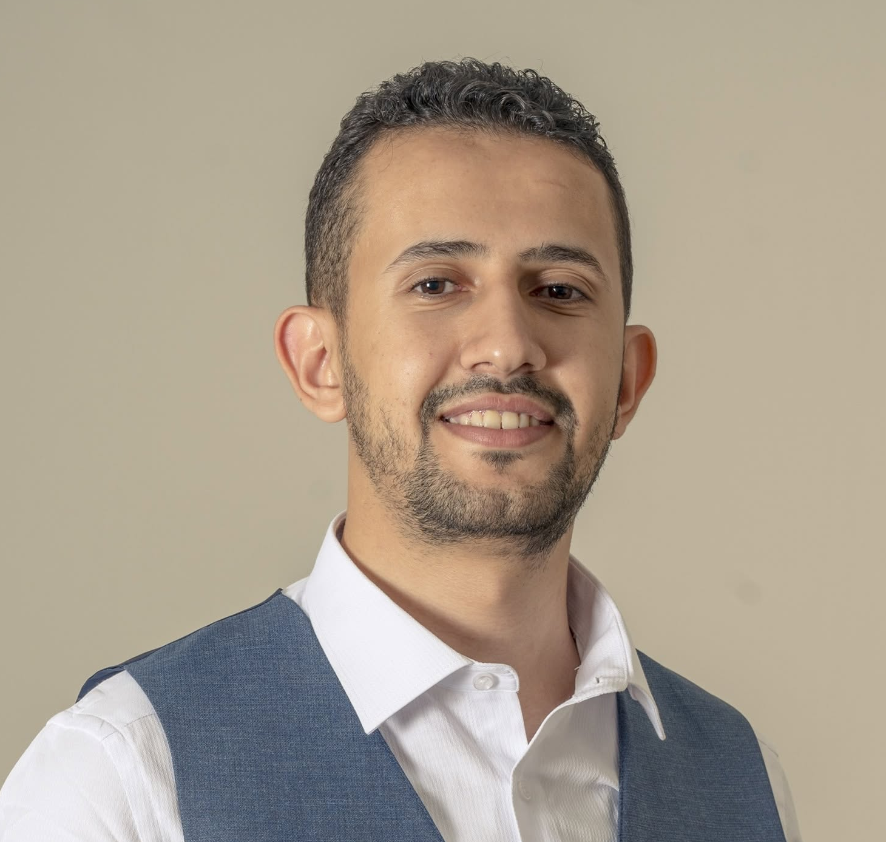

Compound weather extremes
Investigating when extreme precipitation and strong winds occur together, and how their frequency and severity vary across Europe.
About the thesis →Meteorology and Climate Physics
Karlsruhe Institute of Technology (KIT) · Karlsruhe, Germany

I am an MSc student in Meteorology and Climate Physics and a student research assistant at the Karlsruhe Institute of Technology. My work brings together atmospheric science, data analysis, and scientific software.
My master's research examines compound precipitation and wind extremes across Europe. Alongside my thesis, I work on aerosol–cloud–lightning relationships and develop software for the INSEKT freezing-array instrument.
I also teach mathematics online and support fundraising and proposal development at Resonate Yemen Foundation. Here you can explore my current work, research interests, and professional background.
Current work
Investigating when extreme precipitation and strong winds occur together, and how their frequency and severity vary across Europe.
About the thesis →Combining lightning observations, aerosol fields, and cloud information to explore relationships across different regions.
About the research →Extending and stabilising a Python interface that helps laboratory users run freezing experiments and record their measurements.
About the software →My work also involves explaining mathematics, coordinating proposals, and working with people across different academic and professional settings.